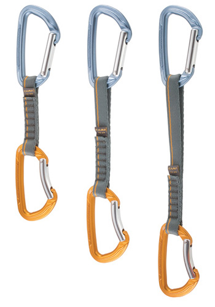

Εξοπλισμός αναρρίχησης
Παρακάτω γίνεται μια περιγραφή του βασικού αναρριχητικού εξοπλισμόυ. Πάντα πριν τη χρήση πρέπει να ελέγχεται για τυχόν φθορές.
 Μπωντριέ: Επιτρέπει να δεθεί ο αναρριχητής με ασφάλεια στο σκοινί. Αποτελείται από τη ζώνη και τους ιμάντες για τα πόδια τα οποία συνδέονται μεταξύ τους. Η ζώνη έχει συνήθως μαξιλαράκια για άνεση και προστασί και θηλιές στις οποίες κρεμιούνται τα υλικά αναρρίχησης. Σε όλα τα μπωντριέ υπάρχουν ιμάντες στους οποίος δένουμε το σκοινί και υπάρχει μια διαφορετίκη θέση στην οποία δένουμε το οχτάρι.
Μπωντριέ: Επιτρέπει να δεθεί ο αναρριχητής με ασφάλεια στο σκοινί. Αποτελείται από τη ζώνη και τους ιμάντες για τα πόδια τα οποία συνδέονται μεταξύ τους. Η ζώνη έχει συνήθως μαξιλαράκια για άνεση και προστασί και θηλιές στις οποίες κρεμιούνται τα υλικά αναρρίχησης. Σε όλα τα μπωντριέ υπάρχουν ιμάντες στους οποίος δένουμε το σκοινί και υπάρχει μια διαφορετίκη θέση στην οποία δένουμε το οχτάρι.
Σκοινί: Ίσως το πιο σημαντικό και εξειδικευμένο κομμάτι του εξοπλισμού, μιας και είναι με αυτό δένεται η ζωή σας. Υπάρχουν δύο βασικές κατηγορίες:
- Δυναμικό: Χρησιμοποιείται στην αναρρίχηση λόγω της ελαστικότητάς του. Μπορεί να απορροφήσει την ενέργεια μιας πτώσης το οποίο είναι πολύ σημαντικό μιας και το σκοινί δέχεται τη δύναμη της πτώσης και όχι εμείς.
- Στατικό: Είναι ένα "σκληρό" σκοινί με ελάχιστη ελαστικότητα. Χρησιμοποιείται για ραπέλ, top-rope και διασώσεις.
Αναρριχητικά παπούτσια: Προστατεύουν τα πόδια αλλά και προσφέρουν την απαιτούμενη τριβή στην αναρρίχηση. Η σόλα είναι από εύκαμπτο λάστιχό ενώ το σώμα από ελαφρύ δέρμα. Πλέον με την ανάπτυξη της τεχνολογίας υπάρχουν διαφορετικοί τύποι παπουτσιώνα ανάλογα με τον βράχο που θέλουμε να σκαρφαλώσουμε. Τα παπούτσια πρέπει να εφαρμόζουν τέλεια πάνω στο πόδι δίνοντας την αίσθηση πως πόδι και παπούτσι είναι ένα. Δεν είναι άνετα στο περπάτημα για αυτό θα ήταν καλό να υπάρχει φοράτε κάποια άλλα παπούτσια μέχρι να προσεγγίσετε τη διαδρομή.
Κράνος: Το ειδικό κράνος για αναρρίχηση είναι απαραίτητο όταν κάνουμε αναρρίχηση σε βράχο γιατί μας προστατεύει από τυχόν πτώσεις βράχων αλλά και δική μας πτώση. Εξωτερικά είναι κατασκευασμένο από κάποιο σκληρό υλικό όπως πλαστικό ή ανθρακονήματα ενώ εσωτερικά από μαλακό υλικό για άνεση. Είναι πολύ σημαντικό το κράνος να κάθεται σωστά και να μην μας ενοχλεί.
Καραμπίνερ: Είναι ανθεκτικοί, ελαφροί μεταλλικοί κρίκοι με πύλες που ανοίγουν και χρησιμοποιούνται για να συνδέσουμε το σκοινί σε μέσα ασφάλισης όπως τα καρυδάκια ή φρεντάκια ή αφάλειες. Υπάρχουν δύο είδη καραμπίνερ τα απλά και τα ασφαλείας. Φυσικά για την ασφάλεια μας χρησιμοποιούμε τα δεύτερα των οποίων η πύλη "κλειδώνει". Ανάλογα με το σχήμα τους χωρίζονται σε:
- D σχήματος: Φέρνουν το βάρος στο πίσω μέρος της μπάρας και είναι ότι πρέπει για σετάκια. Το μειωνέκτημά τους είναι το βάρος.
- D ασσύμετρου σχήματος: Αυτά έχουν τη μια πλευρά τους πιο στενή για να μειώσουν το βάρος αλλά και για να πέφτει καλύτερα η τάση στο πίσω μέρος. Ιδανικά για σετάκια.
- Οβάλ: Ένα βασικό καραμπίνερ με πολλές χρήσεις. Κυρίως χρησιμοποιείται στην τεχνιτή αναρρίχηση και την σπηλαιολογία. Επιτρέπει να κλιπαριστούν περισσότερα υλικά πάνω του αλλά δεν αντέχει τόσο στις φθορές.
 Σετάκια: Αποτελούνται από δύο καραμπίνερ ενωμένα μεταξύ τους με ιμάντα. Αυτό γίνεται γιατί τα καραμπίνερ δεν πρέπει ποτέ να τοποθετούνται απευθείας στην ασφάλεια μιας και υπάρχει περίπτωση η πύλη τους να μην κλείσει καλά από την πτώση ή την πίεση στον βράχο. Το ένα καραμπίνερ το κλιπάρουμε στην ασφάλεια (με την πύλη αντίθετα από τον βράχο) ενώ το άλλο το περνάμε στο σκοινί μας.
Οχτάρι: Χρησιμοποιείται για την ασφάλιση του επικεφαλής. Είναι ο πιο απλός τρόπος ασφάλισης προσφέροντας ταυτόχρονα και καλές τριβές για στο ραπέλ. Στα προτερήματά του είναι το μικρό του βάρος και η σχετικά χαμηλή τιμή του. Ακόμα είναι απλό,ομαλό και στρωτό στην χρήση, ελέγχεται εύκολα και αντέχει αρκετά, χωρίς μέρη που σπάνε ή κουνιούνται.
Στα μειωνεκτήματα του είναι η ιδιαίτερη εξοικείωση και πρακτική που απαιτείται για τη σωστή ασφάλιση του επικεφαλής. Δεν ενδείκνυται για την ασφάλιση του δεύτερου και για την ασφάλιση σε τεχνική διπλού σχοινιού (μπερδεύει τα σχοινιά). Επίσης χρειάζεται ειδικούς χειρισμούς για να μην βιρινιάζει τα σχοινιά σε πολλαπλά ραπέλ καθώς κάθε 3m προσθέτει και μια επιπλέον στροφή στα σχοινιά.